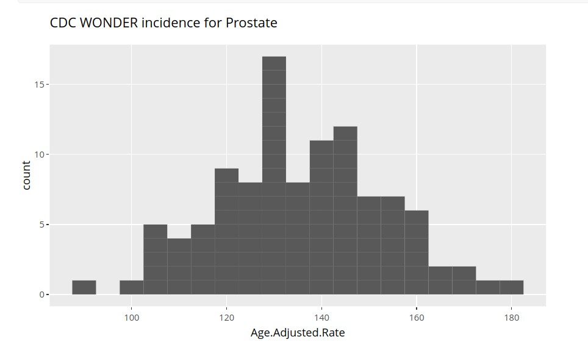
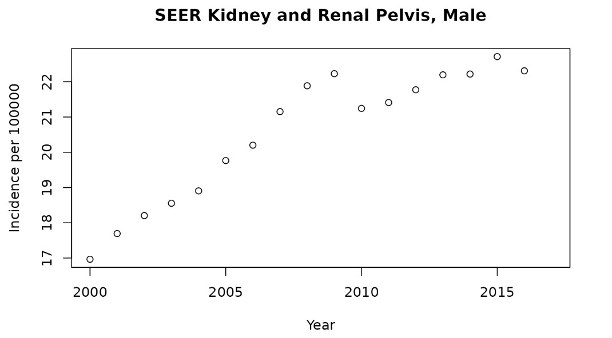

A0 Introductory Notebook
Vincent J. Carey, stvjc at channing.harvard.edu
Alexandru Mahmoud, almahmoud at channing.harvard.edu
May 22, 2026
Source:vignettes/A0_intro_notebook.Rmd
A0_intro_notebook.RmdIntroductory Notebook
Here are some questions that explore your prior understanding of cancer and cancer data. The main purpose of this notebook is to show you how to launch a notebook and submit answers.
Public Resources
The National Cancer Institute (NCI) is a branch of the National Institutes of Health. Visit NCI’s website to learn more about NCI’s mission, then answer the questions below to the best of your ability.
Exercises
A.0.1 Mark T (for True) or F (for False) next to each statement
A.0.1.1 __ NCI is funded by federal tax dollars
A.0.1.2 __ NCI sets the prices for cancer treatments in the US
A.0.1.3 __ NCI leads efforts in the US to improve cancer treatment and survivorship
A.0.1.4 __ Cancer researchers can apply to NCI to receive money to investigate questions about cancer biology
A.0.1.5 __ Some cancers and their outcomes are not actively researched because of limited resources available to NCI
Terminology
Understanding the language used in a particular field is important for clear and effective communication. Throughout the course you will see a multitude of statistical and medical terms.
Understanding Rates
This display is from the Surveillance, Epidemiology and End Results (SEER) program run by NCI.

SEER overview, 2021
Visualizing data
A histogram is a data visualization that shows the relative frequencies of measured quantities. Below we have a histogram of rates of prostate cancer incidence across a collection of American cities, reported as age-adjusted rates per 100000 males.

Cancer prostate Incidence
Interpreting data
This figure shows changes in the rate of new kidney cancers compiled by the NCI Surveillance, Epidemiology and End Results program.

Kidney Cancer Rates